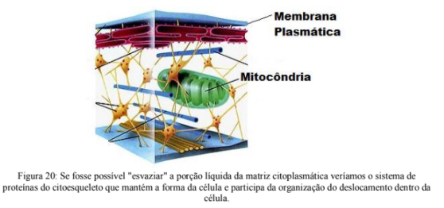
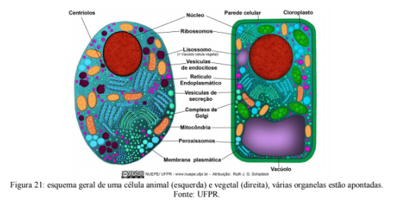
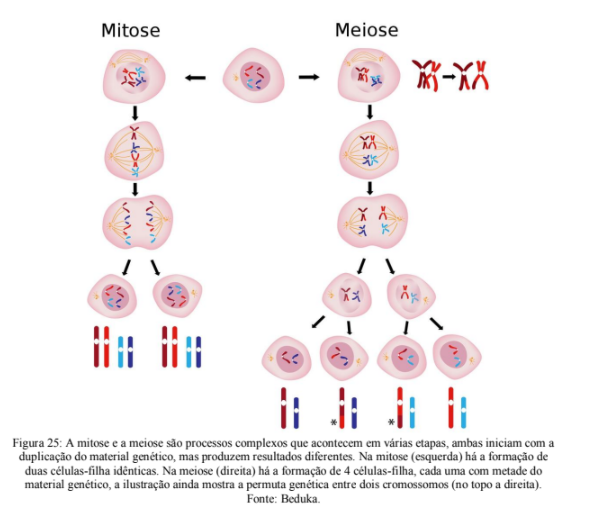
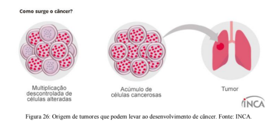
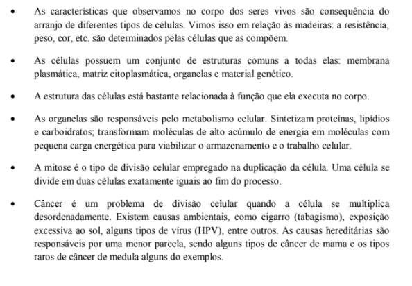

Capítulo 4
CONHECER OS MICRO-ORGANISMOS IMPULSIONA A INDÚSTRIA ALIMENTÍCIA
Você já cultivou Kefir em casa? O Kefir é uma bebida a base de leite ou água produzida a partir da fermentação de uma colônia mista de micro-organismos (figura 16). Muitas pessoas cultivam essas colônias em casa, pois as bactérias e fungos que formam a colônia promovem a saúde do sistema digestório.
O processo de fermentação que acontece em casa é basicamente o mesmo utilizado nas indústrias alimentícias para produção de iogurtes, leites, fermentados, vinhos, cervejas, etc. O que muda é o subtrato que fornecemos para que os micro-organismos se alimentarem: se será o trigo (no caso do pão), o leite (para produção de iogurtes), uvas (para vinhos) e assim por diante. É necessário que se conheça a forma de vida e o funcionamento das células dos micro-organismos para que estes possam ser utilizados na produção de alimentos de forma segura e eficiente.
Acesse o vídeo clicando no link a seguir:
Uma colherada de iogurte e imediatamente um sabor azedinho aparece na parte de trás da língua. Você sabe o que provoca esta sensação? É o ácido lático produzido no processo de fermentação do leite. O Lactobacillus (bactéria), utiliza o açúcar presente no leite, a lactose, transformado em glicose, para produzir energia e o resultado desta reação é a formação do ácido lático. O queijo e a coalhada também são produzidos por fermentação láctica pelas bactérias do leite.
Veja a reação da fermentação láctica a seguir:
(RE)CONSTRUINDO CONHECIMENTOS
Os micro-organismos são seres invisíveis a olho nu. Bactérias e leveduras são muito importantes tanto por suas funções nos processos ecológicos quanto por sua participação na economia humana.
As bactérias são organismos tipicamente unicelulares. Apresentam organização interna muito simples, diferindo dos demais pela ausência de membrana nuclear, sendo, portanto, procariontes. Os organismos mais antigos, encontrados há 3,8 bilhões de anos, fossilizados em rochas no continente africano são bactérias. Habitam uma enorme variedade de ambientes, estando presentes desde as regiões geladas até no interior de vulcões. A grande resistência das bactérias a situações ambientais extremas advém, além de suas características genéticas, das estruturas de proteção que apresentam. Externamente à membrana plasmática, as bactérias possuem uma parede celular permeável constituída principalmente por polímeros de carboidratos associados a peptídeos (peptoglicanos). Algumas bactérias apresentam ainda uma camada adicional externa constituída por lipídios e polissacarídeos (figura 17).

As bactérias podem ter hábito de vida livre (quando vivem sem depender obrigatoriamente de outros), podem ser parasitas ou estabelecer uma relação de mutualismo com outros seres vivos.
A maioria das bactérias parasitas são causadoras de doenças. Infectando seres vivos, elas obtêm alimento do próprio organismo hospedeiro, causando problemas importantes. Como exemplo de doenças causadas por bactérias citamos a difteria, o tétano, a cólera, a meningite e a tuberculose.
O mutualismo é uma relação entre duas espécies de seres vivos na qual ambas obtém benefícios que não teriam caso não vivessem juntas. Algumas bactérias têm uma grande capacidade de digerir celulose. Vivendo no estômago de certos animais herbívoros (em especial os ruminantes, como bovinos, cavalos e ovelhas), as bactérias obtêm abrigo e alimento em abundância, enquanto o animal se beneficia dos produtos da digestão da celulose, coisa que, sem as bactérias, seria incapaz de fazer.
Quanto à forma de obtenção de alimento, as bactérias podem ser autótrofas ou heterótrofas. As bactérias autótrofas sintetizam a matéria orgânica de que necessitam através da fotossíntese (energia a partir da luz solar) e da quimiossíntese (energia a partir de moléculas). A fotossíntese bacteriana é diferente da dos vegetais, ela é realizada por um pigmento denominado bacterioclorofila, que se localiza em um sistema rudimentar de membranas existentes no citoplasma bacteriano. Esta molécula é capaz de absorver radiação no comprimento de onda do infravermelho (que é invisível para humanos).
PARA ENTENDER MAIS:
O ciclo de renovação do nitrogênio está intimamente ligado à ação de bactérias. O nitrogênio é um elemento químico constituinte de aminoácidos, que formam as proteínas, e dos nucleotídeos, que formam o DNA e o RNA. Portanto, é indispensável aos seres vivos. O nitrogênio não é produzido, mas reciclado no nosso planeta, por isso falamos no ciclo do nitrogênio (figura 18).

Acompanhe na imagem acima: a principal fonte de nitrogênio é a atmosfera, onde ele aparece na forma de gás N2. O fato é que nenhum outro organismo é capaz de assimilar diretamente o gás e convertê-lo nos compostos nitrogenados. Esta tarefa cabe às bactérias do solo, principalmente. Bactérias, como a Azotobacter, são capazes de converter o N2 em amônia (NH3). Esta é convertida em nitritos (NO2) e estes em nitratos (NO3), respectivamente, pela Nitrossomona e pela Nitrobacter. Os nitratos são incorporados pelas plantas quando estas absorvem a água com os sais dissolvidos. Os nitratos são convertidos em aminoácidos, que, compondo as proteínas, asseguram a formação da estrutura vegetal e são passados, através da cadeia alimentar, aos animais.
Moral da história, todas as plantas dependem das bactérias presentes no solo para obter os compostos nitrogenados. Uma exceção são as plantas leguminosas (feijão, soja, lentilha), pois estas possuem, em uma relação simbiótica, bactérias do gênero Rhizobium formando nódulos em suas raízes. Tais bactérias são capazes de fixar e nitrificar o N2 diretamente da atmosfera para a planta. Esta é uma adaptação essencial para locais com pouco nitrogênio no substrato. Por esse motivo vários agricultores experientes alternam os plantios com leguminosas para recuperar a quantidade de nitrogênio no solo sem que seja necessário corrigir com fertilizantes.
A maioria das bactérias heterótrofas é decompositora. Ao consumir a matéria orgânica de seres já mortos, elas obtém alimento ao mesmo tempo em que promovem a reciclagem de nutrientes para o solo. O processo acontece com a liberação de enzimas digestivas sobre a matéria orgânica, que é decomposta e posteriormente absorvida.
É o processo de decomposição realizado por bactérias e fungos que garante a fertilidade do solo e impede o acúmulo de matéria orgânica morta no planeta. A decomposição anaeróbica dos resíduos orgânicos em aterros sanitários leva a produção do gás metano (CH4). O biogás, como é conhecido, é uma fonte renovável de energia transformado em eletricidade a partir da sua queima. O metano, extremamente danoso para o efeito estufa, é convertido em dióxido de carbono (CO2) no processo.
As bactérias heterótrofas que não são decompositoras incluem, como já foi mencionado, as formas parasitas e mutualistas. As espécies utilizadas economicamente para a produção de laticínios e vinagres também são heterótrofas. Em todos os casos a alimentação ocorre por absorção.
VOCÊ SABIA?
A meningite é uma doença causada pelas bactérias Neisseria meningitidis, Streptococcus pneumoniae ou Haemophilus influenza, podendo causar a morte ou deixar sequelas irreversíveis como surdez, paralisia cerebral ou dificuldades motoras, pois a infecção promove a inflamação das meninges, membranas que envolvem o sistema nervoso central (figura 19).
Além da indústria alimentícia, existe outro setor que se interessa muito em conhecer a fundo os micro-organismos: a indústria farmacêutica. A maior parte dos micro-organismos desempenha funções ecológicas importantíssimas para a nossa sobrevivência, mas alguns chamam atenção pelo seu potencial em causar doenças. E nesse caso, o desenvolvimento de medicamentos capazes de inibir a reprodução ou mesmo causar a morte dos indivíduos é essencial.
Os antibióticos são substâncias capazes de inibir o crescimento de colônias bacterianas. O médico inglês, Alexander Flemming, em 1928, foi quem descobriu o primeiro antibiótico, a penicilina. A partir da década de 1940, os antibióticos passaram ao uso comercial, sendo responsáveis pelo controle de várias doenças bacterianas.
Apesar da sua importante contribuição para a saúde mundial, o uso equivocado de antibióticos permitiu o surgimento de superbactérias, que são altamente resistentes aos antibióticos conhecidos (figura 20). Casos graves de contaminação ocorrem principalmente em hospitais, gerando problemas como a infecção hospitalar. Os procedimentos de higiene e o controle das infecções em um hospital são importantes para a manutenção da saúde humana.
AÇÃO E REFLEXÃO
A fermentação anaeróbica (sem oxigênio) realizada por micro-organismos gera gás metano. Em usinas biotérmicas, a energia liberada pela queima do gás metano pode ser convertida em energia elétrica e utilizada para abastecer a rede de energia elétrica. Esse processo é considerado positivo, pois pode ser realizado a partir do lixo orgânico coletado (figura 21).
Depois de analisar as etapas, reflita: em quais outros locais pode ser instalada essa forma de obtenção de energia? Será possível suprir o consumo elétrico de uma fábrica utilizando apenas esse processo?

O QUE APRENDI

